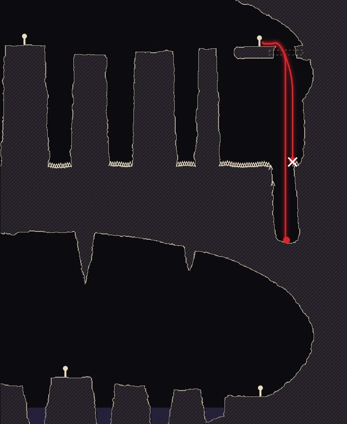
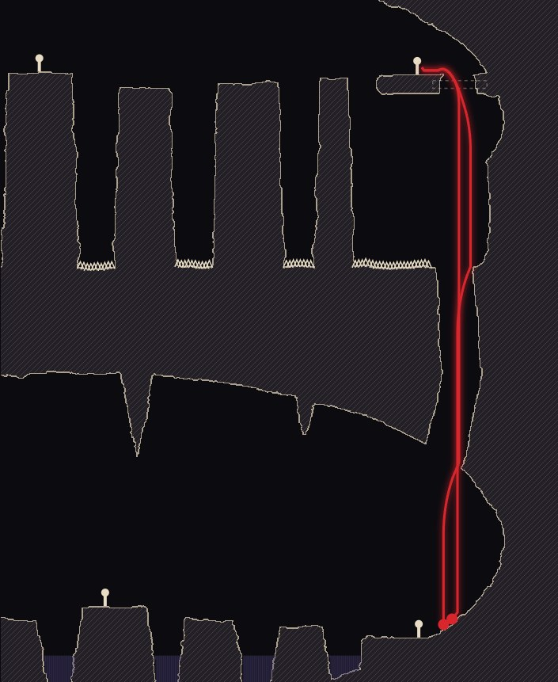
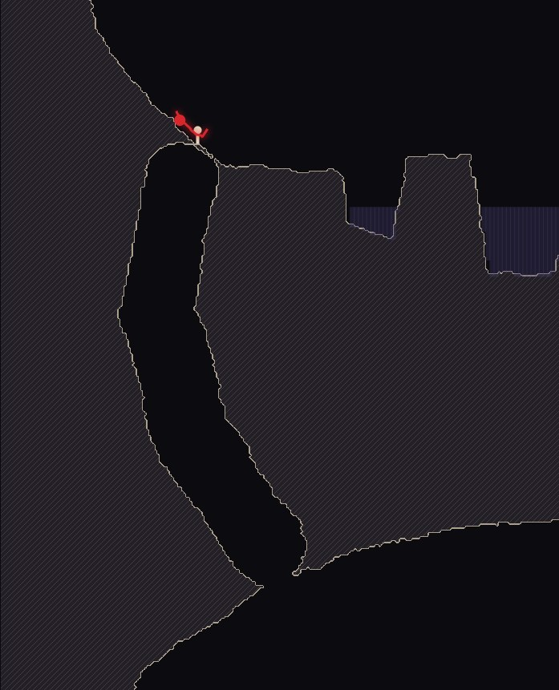
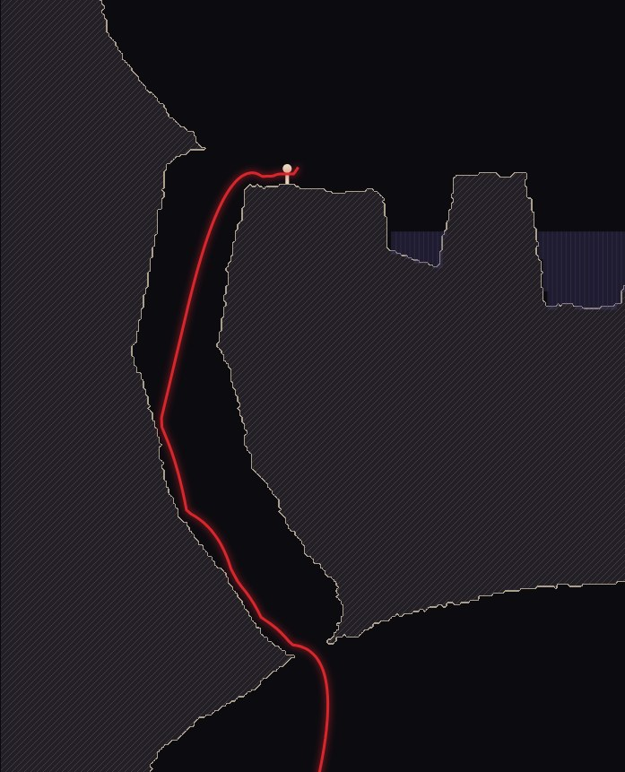

The shaft goes all the way down nowand a fall sends you back to the last peg
Past the moth pillars, the shaft under the veil stopped about six metres above the Ink Mere's roof, so once you dropped in there was nowhere to go. A thorn hitbox was also hidden on a ledge inside the shaft, so touching the wall there killed you. Because you hadn't tied the last pegs, each death sent you all the way back to the cottage.
All of that is fixed. I also checked the whole level for the same kind of fault and found one more dead end, at the way down to the Loom.
The shaft under the veil
After jumping over the pillars with moths there is a long hole down, but there is no way out of it, and I got sent to the cottage after exploring the walls of the hole even though there are clearly no spikes.


BeforeAfter
Drag the thread to compare
These are cross-section maps drawn from the game's own rock data, not screenshots, because the shaft is too dark to see anything in a still frame. The red lines are two dolls simulated with the game's physics: each walks off the east ledge and drops into the shaft. Pale spikes mark bramble hitboxes, the white cross is a death, and the dashed box is the veil.
The dead end. The shaft was carved down to just above the Mere but never broke through its roof. That has been true since the first build, so the Mere, the Loom and the ending couldn't be reached by playing. An earlier check moved the doll past this point directly instead of making it fall. The shaft now continues down through the roof, and you land on the Mere's east shore next to its peg.
The invisible spikes. The bramble patch on the Gallery floor was placed by searching downward for ground along a line. Where that line crossed the shaft, the search found the shaft's walls and a small ledge partway down, and put thorn hitboxes there. They were too dark to see, and the ledge is exactly where a doll falling down the right side of the shaft lands. Brambles now grow only on real, flat floor, a patch stops where it meets a gap, and none are left inside the shaft.
Sent back to the cottage
When you die, you go back to the last peg you tied. Tying needed a button press at each peg, and only the first peg ever told you to do it, so it was easy to walk past every peg and lose the whole descent in one fall.
Pegs tie themselves now. When the doll stands at a peg, the thread ties itself with the usual sound and spark, and that peg becomes where you come back to. It doesn't tie while you're hanging from or gripping the thread, so passing a peg mid-rappel won't drop you. Pressing the action key still works.
The old "tie the thread at a peg" hint is gone, since there's nothing left to teach.
The way down to the Loom


BeforeAfter
Drag the thread to compare
A pinched entrance. The top of the tunnel from the Mere's west shore down to the Loom was nearly closed by a knob of rock, leaving a gap only a little wider than the doll. Walking left, the doll wedged against the knob and never fell in. The mouth is now cut wide and clean, and the west shore peg has moved a few steps right so it stands on the shore instead of on the edge of the hole.
How the whole level was checked
Every bramble hitbox was tested for whether it sits on a floor. Before the fix, the Gallery floor patch had two on the shaft's wall and two on the ledge inside it, and the pit at the bottom of the Throat had fifteen on its steep side walls. Now every hitbox sits on flat floor.
Open air from the cottage was flood-filled, with room for the doll's size, to check that every peg, skein, memory and the final scene can be reached. Before the fix, nine couldn't: everything past the shaft, plus a skein above the east ledge that had been placed inside solid rock. Now all of them can. The skein sits on the east ledge, a few steps from its peg.
The route was played in the simulation: from the east ledge down the shaft to the Mere shore, and from the west shore down the tunnel to the Loom floor and past the final scene. There were no deaths, and pegs tied themselves at the Mere and in the Loom.
All 12 swing gaps still pass with the current swing settings.
Not checked:
A full playthrough by hand. The route was checked in pieces, by simulation and by the flood fill.
How the new shaft and tunnel mouth look in the dark at full size. The maps above come from the same rock data the game uses.
app/src/level.jsThe shaft is extended into the Mere, the Loom tunnel mouth is widened, the Gallery bramble patch now stops before the shaft, and the stuck skein and the west shore peg have moved.
app/src/world.jsBrambles grow only on floor and split at gaps, pegs tie themselves on reach, and the old tie hint is removed.